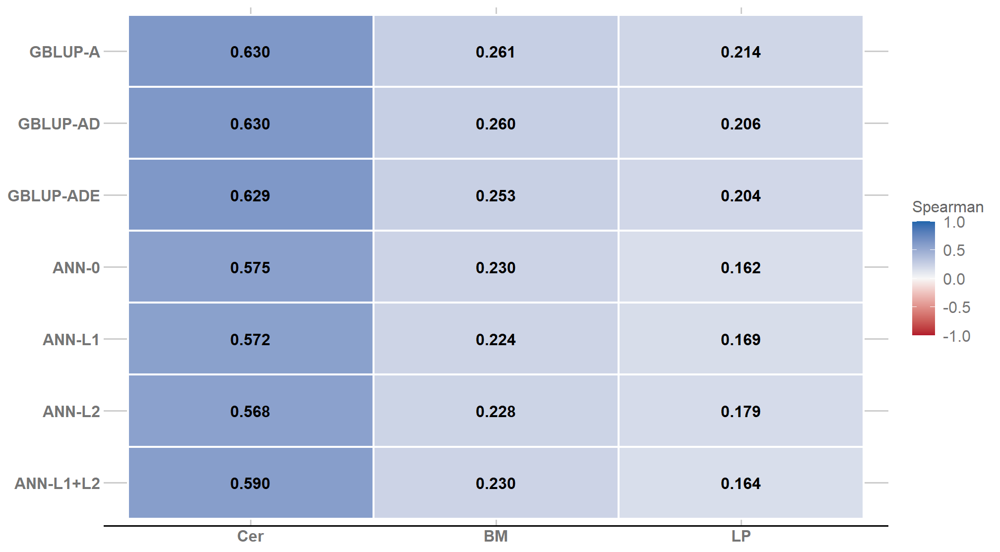
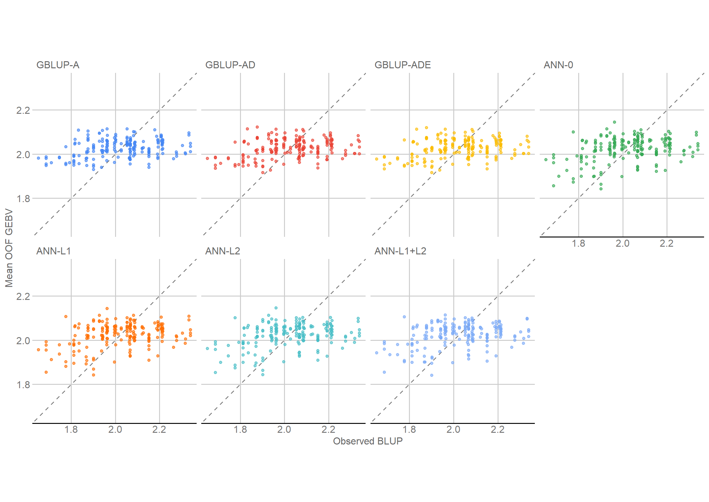

Real data: GBLUP and regularized ANN comparison
Weverton Gomes da Costa
2026-11-25
Last updated: 2026-11-25
Checks: 7 0
Knit directory:
Genomic-Prediction-using-Regularized-Artificial-Neural-Networks/
This reproducible R Markdown analysis was created with workflowr (version 1.7.2). The Checks tab describes the reproducibility checks that were applied when the results were created. The Past versions tab lists the development history.
Great! Since the R Markdown file has been committed to the Git repository, you know the exact version of the code that produced these results.
Great job! The global environment was empty. Objects defined in the global environment can affect the analysis in your R Markdown file in unknown ways. For reproduciblity it’s best to always run the code in an empty environment.
The command set.seed(20260821) was run prior to running
the code in the R Markdown file. Setting a seed ensures that any results
that rely on randomness, e.g. subsampling or permutations, are
reproducible.
Great job! Recording the operating system, R version, and package versions is critical for reproducibility.
Nice! There were no cached chunks for this analysis, so you can be confident that you successfully produced the results during this run.
Great job! Using relative paths to the files within your workflowr project makes it easier to run your code on other machines.
Great! You are using Git for version control. Tracking code development and connecting the code version to the results is critical for reproducibility.
The results in this page were generated with repository version 53b9904. See the Past versions tab to see a history of the changes made to the R Markdown and HTML files.
Note that you need to be careful to ensure that all relevant files for
the analysis have been committed to Git prior to generating the results
(you can use wflow_publish or
wflow_git_commit). workflowr only checks the R Markdown
file, but you know if there are other scripts or data files that it
depends on. Below is the status of the Git repository when the results
were generated:
Ignored files:
Ignored: .Rhistory
Ignored: .Rproj.user/
Ignored: .github/
Ignored: CONTRIBUTING.md
Ignored: data/dados_reais/geno_real.rds
Ignored: output/real/ann/figures/
Ignored: output/real/audit/figures/
Ignored: output/real/comparison/figures/
Ignored: output/real/gblup/figures/
Ignored: output/real/phenotype/figures/
Ignored: output/simulated/ann/figures/
Ignored: output/simulated/audit/figures/
Ignored: output/simulated/comparison/figures/
Ignored: output/simulated/gblup/figures/
Ignored: output/simulated/validation/figures/
Ignored: renv/library/
Ignored: renv/staging/
Note that any generated files, e.g. HTML, png, CSS, etc., are not included in this status report because it is ok for generated content to have uncommitted changes.
These are the previous versions of the repository in which changes were
made to the R Markdown (analysis/real_data_comparison.Rmd)
and HTML (docs/real_data_comparison.html) files. If you’ve
configured a remote Git repository (see ?wflow_git_remote),
click on the hyperlinks in the table below to view the files as they
were in that past version.
| File | Version | Author | Date | Message |
|---|---|---|---|---|
| Rmd | 53b9904 | Weverton Gomes da Costa | 2026-11-25 | Clarify upstream calibration slope conventions in R05 |
| Rmd | 9972a2e | Weverton Gomes da Costa | 2026-11-25 | Refactor R05 sections 1-3: scientific foundations, matched assessment keys and calibration |
| html | a25f6d0 | WevertonGomesCosta | 2026-11-19 | docs(site): publish audited R05 GBLUP ANN comparison |
| Rmd | 6ce3c02 | Weverton Gomes da Costa | 2026-11-19 | style(real): read R05 model outputs from direct relative paths |
| Rmd | 9ab30c3 | Weverton Gomes da Costa | 2026-11-19 | style(real): finalize R05 compact code and remove tutorial assertions |
| Rmd | da7f700 | Weverton Gomes da Costa | 2026-11-19 | style(real): compact unnecessary line breaks in R05 tutorial chunks |
| Rmd | b24bf82 | Weverton Gomes da Costa | 2026-11-19 | docs(real): improve R05 figure accessibility and table overflow without recomputation |
| Rmd | 6af854f | Weverton Gomes da Costa | 2026-11-19 | docs(real): separate R05 output exports from comparisons |
| Rmd | cdc8503 | Weverton Gomes da Costa | 2026-11-19 | docs(real): expose model-column mappings and remove internal R05 inventory |
| Rmd | a535994 | Weverton Gomes da Costa | 2026-11-19 | style(real): compact R05 code without changing R expressions |
| Rmd | 3797a61 | Weverton Gomes da Costa | 2026-11-19 | docs(real): divide R05 comparison analyses into explanatory chunks |
| Rmd | 15bfb23 | GitHub | 2026-11-16 | docs: standardize scientific documentation and terminology (#19) |
| html | 15bfb23 | GitHub | 2026-11-16 | docs: standardize scientific documentation and terminology (#19) |
| html | c836215 | GitHub | 2026-11-16 | docs(site): publish real-data tutorial and synchronized comparisons (#18) |
| Rmd | 1faca28 | WevertonGomesCosta | 2026-11-13 | Add real-data GBLUP and ANN comparison |
| html | 1faca28 | WevertonGomesCosta | 2026-11-13 | Add real-data GBLUP and ANN comparison |
| Rmd | a6a1d2f | WevertonGomesCosta | 2026-11-12 | Remove obsolete real-data workflow and diagnostics |
| html | a6a1d2f | WevertonGomesCosta | 2026-11-12 | Remove obsolete real-data workflow and diagnostics |
| html | cdbac19 | WevertonGomesCosta | 2026-11-09 | Build real-data workflowr pages |
| Rmd | d16aa18 | WevertonGomesCosta | 2026-11-09 | Add real-data ANN and model comparison workflows |
1. Purpose
This module compares three genomic best linear unbiased prediction (GBLUP) structures from R04A and four artificial neural-network (ANN) variants from R04B. All seven methods predict the same precomputed individual phenotypic BLUPs using the common outer cross-validation design established in R03. The stored results are read directly; no genomic prediction model is refitted in this module.
| Model | Genomic structure or explicit weight penalty |
|---|---|
| GBLUP_A | Additive genomic relationship |
| GBLUP_AD | Additive and dominance genomic relationships |
| GBLUP_ADE | Additive, dominance and additive-by-additive epistatic genomic relationships |
| ANN_0 | No explicit L1 or L2 penalty |
| ANN_L1 | L1 weight penalty |
| ANN_L2 | L2 weight penalty |
| ANN_L1_L2 | Simultaneous L1 and L2 weight penalties |
All four ANN variants use early stopping during the selection of training duration. ANN_0 therefore denotes the absence of explicit L1 and L2 penalties, not the absence of every form of regularization. The GBLUP structures use their respective genomic relationship matrices, whereas the ANN variants use genomic markers as network inputs.
The population comprises 195 individuals evaluated for Cer, BM and LP. Five repetitions of five-fold outer cross-validation yield 25 assessment splits per trait and model, each with 39 held-out individuals. The ANN hyperparameters were selected within the corresponding outer analysis samples in R04B; GBLUP uses the three prespecified structures in R04A.
Unlike the simulated analysis, the real data do not provide known true genetic values. The evaluation target is the phenotypic BLUP, which was estimated before the genomic validation design and was not refitted within each genomic split. Agreement with these BLUPs therefore measures genomic prediction of the available phenotypic reference, not accuracy against known true genetic values. Throughout this module, GEBV denotes the stored genomic prediction on the BLUP scale; it does not imply that the full prediction is an additive breeding value for every model.
The comparison distinguishes three scientific questions:
- How well does each model predict the phenotypic BLUP within an outer assessment split? Pearson, Spearman, RMSE and MAE are the primary metrics; bias and calibration slope provide complementary information.
- How do the models differ on matched outer splits?
- How well do the mean out-of-fold (OOF) predictions recover individual rankings and the upper 20% of the phenotypic BLUP distribution, and how similar are the ranking strata produced by different models?
Repeated cross-validation reuses individuals across analysis sets and assessment repetitions. The split-level summaries and contrasts are descriptive, not significance tests based on 25 independent replicates.
2. Prediction data and cross-validation
2.1 Packages and dependencies
The module uses knitr and kableExtra for
tables and ggplot2 with ggthemes for figures.
The stored fitting outputs are sufficient for the comparison; neither
BGLR nor torch is required here.
library(knitr)
library(ggplot2)
library(ggthemes)2.2 Saved prediction results and validation design
The six fitting outputs have three different units of observation. The validation design from R03 supplies the assessment identifiers against which their coverage is examined.
| Input object | Unit of observation | Expected rows |
|---|---|---|
| gblup_results | Trait, outer split and GBLUP structure | 225 |
| ann_results | Trait, outer split and ANN variant | 300 |
| gblup_predictions | Held-out individual, trait, outer split and GBLUP structure | 8,775 |
| ann_predictions | Held-out individual, trait, outer split and ANN variant | 11,700 |
| gblup_ranking | Individual, trait and GBLUP structure | 1,755 |
| ann_ranking | Individual, trait and ANN variant | 2,340 |
gblup_results <- readRDS("output/real/gblup/real_gblup_results.rds")
gblup_predictions <- readRDS("output/real/gblup/real_gblup_predictions.rds")
gblup_ranking <- readRDS("output/real/gblup/real_gblup_individual_ranking.rds")
ann_results <- readRDS("output/real/ann/final/real_ann_results.rds")
ann_predictions <- readRDS("output/real/ann/final/real_ann_predictions.rds")
ann_ranking <- readRDS("output/real/ann/final/real_ann_individual_ranking.rds")The common validation object is read without regenerating folds.
comparison_cv <- readRDS("output/real/validation/real_cv_design.rds")
comparison_assessment <- comparison_cv$outer_assignments[
, c("Repetition", "OuterFold", "SplitID", "ID"), drop = FALSE
]
names(comparison_assessment)[
names(comparison_assessment) == "OuterFold"
] <- "Fold"2.3 Harmonizing the result columns and model identifiers
Both fitting modules use the same metrics and prediction targets. The following named vectors map the original column names to the short names used throughout this comparison. A loop applies each mapping to the corresponding pair of data frames. Only column names change; the stored values, row order and files remain unchanged.
metric_names <- c(
BLUP_Correlation = "Pearson", BLUP_Spearman = "Spearman",
BLUP_RMSE = "RMSE", BLUP_MAE = "MAE",
BLUP_Bias = "Bias", BLUP_Slope = "Slope"
)
prediction_names <- c(Observed_BLUP = "BLUP", Predicted_BLUP = "GEBV")
ranking_names <- c(
prediction_names, Prediction_SD = "GEBV_SD",
Observed_Rank = "BLUP_Rank", Predicted_Rank = "GEBV_Rank",
Observed_Top20 = "BLUP_Top20", Predicted_Top20 = "GEBV_Top20"
)
# Harmonize the metric, prediction and ranking columns separately.
for (old_name in names(metric_names)) {
names(gblup_results)[names(gblup_results) == old_name] <- metric_names[[old_name]]
names(ann_results)[names(ann_results) == old_name] <- metric_names[[old_name]]
}
for (old_name in names(prediction_names)) {
names(gblup_predictions)[names(gblup_predictions) == old_name] <- prediction_names[[old_name]]
names(ann_predictions)[names(ann_predictions) == old_name] <- prediction_names[[old_name]]
}
for (old_name in names(ranking_names)) {
names(gblup_ranking)[names(gblup_ranking) == old_name] <- ranking_names[[old_name]]
names(ann_ranking)[names(ann_ranking) == old_name] <- ranking_names[[old_name]]
}The scientific identifiers select the seven existing models. The display labels provide a common order for tables and figures; they do not define new model structures.
traits <- c("Cer", "BM", "LP")
gblup_models <- c("GBLUP_A", "GBLUP_AD", "GBLUP_ADE")
ann_models <- c("ANN_0", "ANN_L1", "ANN_L2", "ANN_L1_L2")
model_order <- c(gblup_models, ann_models)
model_labels <- c("GBLUP-A", "GBLUP-AD", "GBLUP-ADE", "ANN-0", "ANN-L1", "ANN-L2", "ANN-L1+L2")2.4 Numbers of assessments and predictions
Each model contributes 75 trait-by-split results, 2,925 held-out predictions and 585 individual OOF ranking records. The first table counts the two families’ stored results and prediction records. The ranking table then counts the individual records separately.
input_summary <- data.frame(
Branch = c("GBLUP", "ANN"),
Models = c(length(gblup_models), length(ann_models)),
Model_trait_split_results = c(nrow(gblup_results), nrow(ann_results)),
GEBV_records = c(nrow(gblup_predictions), nrow(ann_predictions)),
stringsAsFactors = FALSE
)
input_summary |>
knitr::kable(
format = "html",
caption = "Cross-validation predictions and performance records by model family",
row.names = FALSE,
table.attr = 'class="table table-striped table-hover table-bordered" style="width:100%;"'
)| Branch | Models | Model_trait_split_results | GEBV_records |
|---|---|---|---|
| GBLUP | 3 | 225 | 8775 |
| ANN | 4 | 300 | 11700 |
ranking_input_summary <- data.frame(
Family = c("GBLUP", "ANN"),
Individuals_per_trait_model = length(comparison_cv$ids),
Ranking_records = c(nrow(gblup_ranking), nrow(ann_ranking)),
stringsAsFactors = FALSE
)
knitr::kable(
ranking_input_summary, format = "html", row.names = FALSE,
caption = "Stored individual OOF ranking records",
table.attr = 'class="table table-striped table-hover table-bordered" style="width:100%;"'
)| Family | Individuals_per_trait_model | Ranking_records |
|---|---|---|
| GBLUP | 195 | 1755 |
| ANN | 195 | 2340 |
The expected combined dimensions are 525 split-level results, 20,475 individual held-out predictions and 4,095 individual ranking records. These totals describe different units of observation and must not be interpreted as independent biological replicates.
2.5 Matched outer tasks and assessment individuals
Cross-model matching uses the model-independent keys
Trait, Repetition, Fold and
SplitID. The individual identifier ID is added
when matching predictions. The original TaskID is not used because its
definition differs across the fitting modules.
The stored R03 outer assignment table is crossed with the three traits to obtain the expected assessment keys for one model. Its distinct split keys define the expected result records.
result_keys <- c("Trait", "Repetition", "Fold", "SplitID")
comparison_keys <- c(result_keys, "ID")
expected_prediction_keys <- merge(
data.frame(Trait = traits, stringsAsFactors = FALSE),
comparison_assessment,
by = NULL
)
expected_prediction_keys <- expected_prediction_keys[
, comparison_keys, drop = FALSE
]
expected_result_keys <- unique(expected_prediction_keys[
, result_keys, drop = FALSE
])The next tables distinguish duplicate keys, absent expected records and unexpected records. Matching is performed on distinct keys so that duplicates cannot inflate the number of matched records. The expected counts are 75 distinct result keys and 2,925 distinct prediction keys per model. Duplicate, missing and unexpected counts should all be zero.
result_key_coverage <- data.frame()
prediction_key_coverage <- data.frame()
assessment_coverage <- data.frame()
for (model_name in model_order) {
if (model_name %in% gblup_models) {
model_results <- gblup_results[gblup_results$Model == model_name, , drop = FALSE]
model_predictions <- gblup_predictions[gblup_predictions$Model == model_name, , drop = FALSE]
} else {
model_results <- ann_results[ann_results$Model == model_name, , drop = FALSE]
model_predictions <- ann_predictions[ann_predictions$Model == model_name, , drop = FALSE]
}
observed_result_keys <- unique(model_results[, result_keys, drop = FALSE])
observed_prediction_keys <- unique(model_predictions[, comparison_keys, drop = FALSE])
matched_result_keys <- merge(
expected_result_keys, observed_result_keys, by = result_keys
)
matched_prediction_keys <- merge(
expected_prediction_keys, observed_prediction_keys, by = comparison_keys
)
result_key_coverage <- rbind(result_key_coverage, data.frame(
Model = model_name,
Records = nrow(model_results),
Distinct_keys = nrow(observed_result_keys),
Duplicate_keys = nrow(model_results) - nrow(observed_result_keys),
Missing_keys = nrow(expected_result_keys) - nrow(matched_result_keys),
Unexpected_keys = nrow(observed_result_keys) - nrow(matched_result_keys),
stringsAsFactors = FALSE
))
prediction_key_coverage <- rbind(prediction_key_coverage, data.frame(
Model = model_name,
Records = nrow(model_predictions),
Distinct_keys = nrow(observed_prediction_keys),
Duplicate_keys = nrow(model_predictions) - nrow(observed_prediction_keys),
Missing_keys = nrow(expected_prediction_keys) - nrow(matched_prediction_keys),
Unexpected_keys = nrow(observed_prediction_keys) - nrow(matched_prediction_keys),
stringsAsFactors = FALSE
))
# Count assessment records in each trait-by-split task.
task_sizes <- aggregate(
list(N = rep(1L, nrow(model_predictions))),
by = model_predictions[, result_keys, drop = FALSE], FUN = sum
)
# Count predictions per individual and repetition, separately by trait.
repetition_sizes <- aggregate(
list(N = rep(1L, nrow(model_predictions))),
by = model_predictions[, c("Trait", "ID", "Repetition")], FUN = sum
)
individual_sizes <- aggregate(
list(N = rep(1L, nrow(model_predictions))),
by = model_predictions[, c("Trait", "ID")], FUN = sum
)
assessment_coverage <- rbind(assessment_coverage, data.frame(
Model = model_name,
Tasks = nrow(task_sizes),
Min_assessment_N = min(task_sizes$N),
Max_assessment_N = max(task_sizes$N),
Trait_individuals = nrow(individual_sizes),
Min_OOF_N = min(individual_sizes$N),
Max_OOF_N = max(individual_sizes$N),
Repetition_groups = nrow(repetition_sizes),
Non_single_repetition_groups = sum(repetition_sizes$N != 1L),
stringsAsFactors = FALSE
))
}
knitr::kable(
result_key_coverage, format = "html", row.names = FALSE,
caption = "Result-key coverage relative to the R03 design",
table.attr = 'class="table table-striped table-hover table-bordered" style="width:100%;"'
)| Model | Records | Distinct_keys | Duplicate_keys | Missing_keys | Unexpected_keys |
|---|---|---|---|---|---|
| GBLUP_A | 75 | 75 | 0 | 0 | 0 |
| GBLUP_AD | 75 | 75 | 0 | 0 | 0 |
| GBLUP_ADE | 75 | 75 | 0 | 0 | 0 |
| ANN_0 | 75 | 75 | 0 | 0 | 0 |
| ANN_L1 | 75 | 75 | 0 | 0 | 0 |
| ANN_L2 | 75 | 75 | 0 | 0 | 0 |
| ANN_L1_L2 | 75 | 75 | 0 | 0 | 0 |
knitr::kable(
prediction_key_coverage, format = "html", row.names = FALSE,
caption = "Individual assessment-key coverage relative to the R03 design",
table.attr = 'class="table table-striped table-hover table-bordered" style="width:100%;"'
)| Model | Records | Distinct_keys | Duplicate_keys | Missing_keys | Unexpected_keys |
|---|---|---|---|---|---|
| GBLUP_A | 2925 | 2925 | 0 | 0 | 0 |
| GBLUP_AD | 2925 | 2925 | 0 | 0 | 0 |
| GBLUP_ADE | 2925 | 2925 | 0 | 0 | 0 |
| ANN_0 | 2925 | 2925 | 0 | 0 | 0 |
| ANN_L1 | 2925 | 2925 | 0 | 0 | 0 |
| ANN_L2 | 2925 | 2925 | 0 | 0 | 0 |
| ANN_L1_L2 | 2925 | 2925 | 0 | 0 | 0 |
The coverage counts should be read together with the next table: each model should have 75 tasks of 39 predictions, 585 trait-individual groups with five OOF predictions each, and 2,925 trait-individual-repetition groups with one prediction each. The key comparisons above also account for missing groups, which cannot be identified from observed group sizes alone.
knitr::kable(
assessment_coverage, format = "html", row.names = FALSE,
caption = "Assessment sample sizes and repeated OOF prediction coverage",
table.attr = 'class="table table-striped table-hover table-bordered" style="width:100%;"'
) |>
kableExtra::scroll_box(width = "100%")| Model | Tasks | Min_assessment_N | Max_assessment_N | Trait_individuals | Min_OOF_N | Max_OOF_N | Repetition_groups | Non_single_repetition_groups |
|---|---|---|---|---|---|---|---|---|
| GBLUP_A | 75 | 39 | 39 | 585 | 5 | 5 | 2925 | 0 |
| GBLUP_AD | 75 | 39 | 39 | 585 | 5 | 5 | 2925 | 0 |
| GBLUP_ADE | 75 | 39 | 39 | 585 | 5 | 5 | 2925 | 0 |
| ANN_0 | 75 | 39 | 39 | 585 | 5 | 5 | 2925 | 0 |
| ANN_L1 | 75 | 39 | 39 | 585 | 5 | 5 | 2925 | 0 |
| ANN_L2 | 75 | 39 | 39 | 585 | 5 | 5 | 2925 | 0 |
| ANN_L1_L2 | 75 | 39 | 39 | 585 | 5 | 5 | 2925 | 0 |
2.6 Matched BLUP targets across models
GBLUP-A is used only as a reference for checking the equality of phenotypic BLUP targets, not as a preferred prediction method. After matching on the individual assessment keys, the maximum absolute BLUP difference measures target agreement. Full agreement requires complete, unique keys (Section 2.5), finite targets and zero difference for every matched record.
comparison_keys <- c("Trait", "Repetition", "Fold", "SplitID", "ID")
blup_check <- gblup_predictions[
gblup_predictions$Model == "GBLUP_A",
c(comparison_keys, "BLUP"),
drop = FALSE
]
target_match <- data.frame(
Model = character(0),
Matched_records = integer(0),
Maximum_BLUP_difference = numeric(0),
stringsAsFactors = FALSE
)
for (model_name in model_order) {
if (model_name %in% gblup_models) {
model_predictions <- gblup_predictions[
gblup_predictions$Model == model_name,
c(comparison_keys, "BLUP"),
drop = FALSE
]
} else {
model_predictions <- ann_predictions[
ann_predictions$Model == model_name,
c(comparison_keys, "BLUP"),
drop = FALSE
]
}
matched <- merge(
blup_check,
model_predictions,
by = comparison_keys,
suffixes = c("_Check", "_Model"),
all = FALSE,
sort = FALSE
)
maximum_difference <- max(abs(matched$BLUP_Check - matched$BLUP_Model))
target_match <- rbind(
target_match,
data.frame(
Model = model_name,
Matched_records = nrow(matched),
Maximum_BLUP_difference = maximum_difference,
stringsAsFactors = FALSE
)
)
}target_match$Model <- factor(target_match$Model, levels = model_order, labels = model_labels)
target_match |>
knitr::kable(
format = "html",
digits = 12,
caption = "BLUP alignment across the seven genomic models",
row.names = FALSE,
table.attr = 'class="table table-striped table-hover table-bordered" style="width:100%;"'
)| Model | Matched_records | Maximum_BLUP_difference |
|---|---|---|
| GBLUP-A | 2925 | 0 |
| GBLUP-AD | 2925 | 0 |
| GBLUP-ADE | 2925 | 0 |
| ANN-0 | 2925 | 0 |
| ANN-L1 | 2925 | 0 |
| ANN-L2 | 2925 | 0 |
| ANN-L1+L2 | 2925 | 0 |
The target-alignment table reports the number of matched records and the maximum difference. Its values must be interpreted alongside the key-coverage tables rather than as evidence of completeness from an inner join alone.
3. Evaluation metrics
3.1 Association and prediction error within an outer split
Let \(y_i\) denote the phenotypic BLUP and \(\widehat y_i\) the stored genomic prediction for held-out individual \(i\). Each assessment split contains \(n=39\) individuals.
| Metric | Interpretation | Reference direction |
|---|---|---|
| Pearson | Linear association | Higher |
| Spearman | Rank association | Higher |
| RMSE | Quadratic prediction error | Lower |
| MAE | Absolute prediction error | Lower |
| Bias | Mean signed prediction error | Near zero |
| Slope | Calibration of predicted scale | Near one |
Pearson correlation measures linear association:
\[ r=\frac{\sum_{i=1}^{n}(y_i-\bar y)(\widehat y_i-\overline{\widehat y})} {\sqrt{\sum_{i=1}^{n}(y_i-\bar y)^2 \sum_{i=1}^{n}(\widehat y_i-\overline{\widehat y})^2}}. \]
Spearman correlation is Pearson correlation applied to the ranks of observed and predicted values, using average ranks for ties. A high correlation does not establish equality of predictions and targets or absence of systematic error.
The error metrics on the original BLUP scale are
\[ \operatorname{RMSE}=\sqrt{\frac{1}{n}\sum_{i=1}^{n}(\widehat y_i-y_i)^2}, \qquad \operatorname{MAE}=\frac{1}{n}\sum_{i=1}^{n}|\widehat y_i-y_i|. \]
RMSE gives larger errors greater weight than MAE. Both are expressed on the scale of the trait, so error magnitudes should be compared within traits, not pooled across traits with different scales.
The stored fitting procedures return undefined correlations when observed or predicted values are constant. Finite RMSE and MAE remain meaningful in these cases. Section 4 distinguishes the model-specific available splits from the common finite splits used in direct correlation comparisons.
3.2 Complementary calibration metrics
Mean signed prediction error is defined as
\[ \operatorname{Bias}=\frac{1}{n}\sum_{i=1}^{n}(\widehat y_i-y_i). \]
Positive bias indicates average overprediction; negative bias indicates underprediction. Bias near zero can result from cancellation of positive and negative errors.
The calibration slope is the prediction coefficient in a regression with an intercept:
\[ y_i=\alpha+\beta\widehat y_i+\varepsilon_i. \]
The reference slope is one. With a meaningful positive association, a slope greater than one can indicate insufficient dispersion of predicted values, and a slope below one can indicate excessive dispersion. A slope near one alone does not demonstrate calibration of location or small errors. R04A stores an undefined slope when predictions are constant; R04B also requires variation in the observed values. The stored values are retained without recalculating calibration.
The following table summarizes the stored bias and slope across each trait and model. Only finite values enter the means and sample standard deviations; the counts show the number of contributing splits. The slope means are model-specific available-split summaries, not common-split contrasts. The four primary metrics and the original comparison objects in Section 4 remain unchanged.
calibration_summary <- data.frame()
for (trait in traits) {
for (model_name in model_order) {
if (model_name %in% gblup_models) {
calibration_data <- gblup_results[
gblup_results$Trait == trait & gblup_results$Model == model_name,
, drop = FALSE
]
} else {
calibration_data <- ann_results[
ann_results$Trait == trait & ann_results$Model == model_name,
, drop = FALSE
]
}
bias_values <- calibration_data$Bias[is.finite(calibration_data$Bias)]
slope_values <- calibration_data$Slope[is.finite(calibration_data$Slope)]
calibration_summary <- rbind(calibration_summary, data.frame(
Trait = trait,
Model = model_name,
Splits = nrow(calibration_data),
Bias_N = length(bias_values),
Bias = mean(bias_values),
Bias_SD = sd(bias_values),
Slope_N = length(slope_values),
Slope = mean(slope_values),
Slope_SD = sd(slope_values),
stringsAsFactors = FALSE
))
}
}
knitr::kable(
calibration_summary, format = "html", digits = 4, row.names = FALSE,
caption = "Complementary bias and calibration slope on available outer splits",
table.attr = 'class="table table-striped table-hover table-bordered" style="width:100%;"'
) |>
kableExtra::scroll_box(width = "100%")| Trait | Model | Splits | Bias_N | Bias | Bias_SD | Slope_N | Slope | Slope_SD |
|---|---|---|---|---|---|---|---|---|
| Cer | GBLUP_A | 25 | 25 | 0.0014 | 0.0195 | 25 | 1.0851 | 0.2291 |
| Cer | GBLUP_AD | 25 | 25 | 0.0014 | 0.0195 | 25 | 1.0850 | 0.2290 |
| Cer | GBLUP_ADE | 25 | 25 | 0.0014 | 0.0195 | 25 | 1.0850 | 0.2290 |
| Cer | ANN_0 | 25 | 25 | 0.0096 | 0.0357 | 25 | 0.9280 | 0.1850 |
| Cer | ANN_L1 | 25 | 25 | 0.0023 | 0.0330 | 25 | 1.0018 | 0.2836 |
| Cer | ANN_L2 | 25 | 25 | 0.0092 | 0.0357 | 25 | 0.9298 | 0.1836 |
| Cer | ANN_L1_L2 | 25 | 25 | 0.0045 | 0.0310 | 25 | 1.0133 | 0.2670 |
| BM | GBLUP_A | 25 | 25 | 0.0004 | 0.0224 | 25 | 1.2169 | 0.8136 |
| BM | GBLUP_AD | 25 | 25 | -0.0002 | 0.0225 | 25 | 1.1610 | 0.7959 |
| BM | GBLUP_ADE | 25 | 25 | 0.0003 | 0.0227 | 25 | 1.1444 | 0.7859 |
| BM | ANN_0 | 25 | 25 | -0.0041 | 0.0279 | 25 | 0.8123 | 0.7703 |
| BM | ANN_L1 | 25 | 25 | -0.0027 | 0.0283 | 25 | 0.8299 | 0.7672 |
| BM | ANN_L2 | 25 | 25 | -0.0041 | 0.0275 | 25 | 0.8038 | 0.7670 |
| BM | ANN_L1_L2 | 25 | 25 | -0.0025 | 0.0282 | 25 | 0.9323 | 0.8780 |
| LP | GBLUP_A | 25 | 25 | 0.0041 | 0.2325 | 23 | 3.5325 | 4.1383 |
| LP | GBLUP_AD | 25 | 25 | 0.0042 | 0.2328 | 24 | 1.9995 | 7.9558 |
| LP | GBLUP_ADE | 25 | 25 | 0.0043 | 0.2328 | 24 | 1.9757 | 7.9216 |
| LP | ANN_0 | 25 | 25 | 0.0278 | 0.3181 | 25 | 0.6426 | 0.5397 |
| LP | ANN_L1 | 25 | 25 | 0.0086 | 0.3401 | 25 | 0.9257 | 1.1199 |
| LP | ANN_L2 | 25 | 25 | 0.0206 | 0.3336 | 25 | 0.6839 | 0.5122 |
| LP | ANN_L1_L2 | 25 | 25 | 0.0367 | 0.3349 | 25 | 0.7336 | 0.8660 |
3.3 Aggregation and individual ranking
The split-level metrics are calculated before aggregation. For metric \(M\), let \(\mathcal{S}_M\) denote the contributing outer splits. With finite values in those splits, the mean is
\[ \overline M=\frac{1}{|\mathcal{S}_M|}\sum_{k\in\mathcal{S}_M}M_k. \]
The mean split correlation is not a correlation calculated after pooling all held-out predictions, and mean split RMSE is generally different from pooled RMSE. Standard deviations describe variability across dependent splits; they are not standard errors or confidence intervals. No \(R^2\) metric is used.
For the individual ranking, the stored OOF predictions are averaged over the five repetitions. Global Spearman correlation, absolute rank error and recovery of the 39 highest observed BLUPs evaluate different aspects of individual ordering. Descending ordering does not necessarily correspond to the biologically favorable direction for every trait.
Pairwise linearly weighted Cohen’s kappa compares the ordered GEBV-ranking strata between two prediction models, rather than comparing predictions with BLUP targets. The intended quintile size is 39 individuals. The construction of the groups and the agreement measures are addressed in Section 6.
4. BLUP-GEBV performance across outer splits
The object all_results concatenates the 225 GBLUP and
300 ANN assessments after the shared metric names have been aligned. No
assessment predictions are pooled across different outer splits.
4.1 Combined result object
analysis_columns <- c(
"Dataset",
"Trait",
"Repetition",
"Fold",
"SplitID",
"Model",
"Pearson",
"Spearman",
"RMSE",
"MAE",
"Bias",
"Slope"
)
all_results <- rbind(gblup_results[, analysis_columns], ann_results[, analysis_columns])
rownames(all_results) <- NULLThe object model_split_structure counts the three
traits, 25 outer splits per trait, and 75 assessments for each of the
seven genomic models.
model_split_structure <- data.frame(
Model = character(0),
Traits = integer(0),
Outer_splits_per_trait = integer(0),
Model_trait_split_results = integer(0),
stringsAsFactors = FALSE
)
for (model_name in model_order) {
x <- all_results[all_results$Model == model_name,, drop = FALSE]
split_counts <- table(x$Trait)
model_split_structure <- rbind(
model_split_structure,
data.frame(
Model = model_name,
Traits = length(unique(x$Trait)),
Outer_splits_per_trait = min(split_counts),
Model_trait_split_results = nrow(x),
stringsAsFactors = FALSE
)
)
}
model_split_structure$Model <- factor(
model_split_structure$Model,
levels = model_order,
labels = model_labels
)
model_split_structure |>
knitr::kable(
format = "html",
caption = "Common outer-split evaluation structure by model",
row.names = FALSE,
table.attr = 'class="table table-striped table-hover table-bordered" style="width:100%;"'
)| Model | Traits | Outer_splits_per_trait | Model_trait_split_results |
|---|---|---|---|
| GBLUP-A | 3 | 25 | 75 |
| GBLUP-AD | 3 | 25 | 75 |
| GBLUP-ADE | 3 | 25 | 75 |
| ANN-0 | 3 | 25 | 75 |
| ANN-L1 | 3 | 25 | 75 |
| ANN-L2 | 3 | 25 | 75 |
| ANN-L1+L2 | 3 | 25 | 75 |
4.2 Mean performance by trait and model
# Record the mean, standard deviation, and finite-fold count for each metric.
performance_summary <- data.frame(
Model = character(0),
Trait = character(0),
Splits = integer(0),
Pearson_N = integer(0),
Pearson = numeric(0),
Pearson_SD = numeric(0),
Spearman_N = integer(0),
Spearman = numeric(0),
Spearman_SD = numeric(0),
RMSE_N = integer(0),
RMSE = numeric(0),
RMSE_SD = numeric(0),
MAE_N = integer(0),
MAE = numeric(0),
MAE_SD = numeric(0),
stringsAsFactors = FALSE
)
for (model_name in model_order) {
for (trait in traits) {
x <- all_results[all_results$Model == model_name & all_results$Trait == trait,, drop = FALSE]
performance_summary <- rbind(
performance_summary,
data.frame(
Model = model_name,
Trait = trait,
Splits = nrow(x),
Pearson_N = sum(is.finite(x$Pearson)),
Pearson = mean(x$Pearson, na.rm = TRUE),
Pearson_SD = sd(x$Pearson, na.rm = TRUE),
Spearman_N = sum(is.finite(x$Spearman)),
Spearman = mean(x$Spearman, na.rm = TRUE),
Spearman_SD = sd(x$Spearman, na.rm = TRUE),
RMSE_N = sum(is.finite(x$RMSE)),
RMSE = mean(x$RMSE, na.rm = TRUE),
RMSE_SD = sd(x$RMSE, na.rm = TRUE),
MAE_N = sum(is.finite(x$MAE)),
MAE = mean(x$MAE, na.rm = TRUE),
MAE_SD = sd(x$MAE, na.rm = TRUE),
stringsAsFactors = FALSE
)
)
}
}The object performance_summary aggregates Pearson,
Spearman, RMSE, and MAE over the outer assessments.
Pearson_N and Spearman_N identify how many
splits yield finite correlation values for each model and trait.
performance_summary$Trait <- factor(performance_summary$Trait, levels = traits)
performance_summary$Model <- factor(performance_summary$Model, levels = model_order)
performance_summary <- performance_summary[
order(performance_summary$Trait, performance_summary$Model),
,
drop = FALSE
]
performance_summary$Trait <- as.character(performance_summary$Trait)
performance_summary$Model <- as.character(performance_summary$Model)
PERFORMANCE_SUMMARY_CSV <- file.path(COMPARISON_DIR, "real_model_performance_summary.csv")
performance_display <- performance_summary[
,
c("Model", "Trait", "Pearson_N", "Pearson", "Spearman_N", "Spearman", "RMSE", "MAE")
]
performance_display$Model <- factor(performance_display$Model, levels = model_order, labels = model_labels)
performance_display |>
knitr::kable(
format = "html",
digits = 4,
caption = "Mean BLUP-GEBV performance across the 25 outer splits",
row.names = FALSE,
table.attr = 'class="table table-striped table-hover table-bordered" style="width:100%;"'
)| Model | Trait | Pearson_N | Pearson | Spearman_N | Spearman | RMSE | MAE |
|---|---|---|---|---|---|---|---|
| GBLUP-A | Cer | 25 | 0.6303 | 25 | 0.6297 | 0.1615 | 0.1306 |
| GBLUP-AD | Cer | 25 | 0.6296 | 25 | 0.6295 | 0.1616 | 0.1307 |
| GBLUP-ADE | Cer | 25 | 0.6296 | 25 | 0.6294 | 0.1616 | 0.1307 |
| ANN-0 | Cer | 25 | 0.5622 | 25 | 0.5747 | 0.1742 | 0.1404 |
| ANN-L1 | Cer | 25 | 0.5662 | 25 | 0.5718 | 0.1736 | 0.1400 |
| ANN-L2 | Cer | 25 | 0.5570 | 25 | 0.5681 | 0.1748 | 0.1408 |
| ANN-L1+L2 | Cer | 25 | 0.5812 | 25 | 0.5900 | 0.1711 | 0.1386 |
| GBLUP-A | BM | 25 | 0.3062 | 25 | 0.2607 | 0.1445 | 0.1196 |
| GBLUP-AD | BM | 25 | 0.3046 | 25 | 0.2604 | 0.1446 | 0.1190 |
| GBLUP-ADE | BM | 25 | 0.2977 | 25 | 0.2526 | 0.1448 | 0.1192 |
| ANN-0 | BM | 25 | 0.2823 | 25 | 0.2301 | 0.1472 | 0.1209 |
| ANN-L1 | BM | 25 | 0.2851 | 25 | 0.2241 | 0.1468 | 0.1210 |
| ANN-L2 | BM | 25 | 0.2805 | 25 | 0.2277 | 0.1472 | 0.1208 |
| ANN-L1+L2 | BM | 25 | 0.2925 | 25 | 0.2295 | 0.1467 | 0.1213 |
| GBLUP-A | LP | 23 | 0.2073 | 23 | 0.2137 | 1.2385 | 0.9756 |
| GBLUP-AD | LP | 24 | 0.1742 | 24 | 0.1770 | 1.2396 | 0.9759 |
| GBLUP-ADE | LP | 24 | 0.1728 | 24 | 0.1758 | 1.2398 | 0.9760 |
| ANN-0 | LP | 25 | 0.1813 | 25 | 0.1808 | 1.2754 | 1.0085 |
| ANN-L1 | LP | 25 | 0.1728 | 25 | 0.1880 | 1.2665 | 0.9977 |
| ANN-L2 | LP | 25 | 0.1918 | 25 | 0.1969 | 1.2768 | 1.0071 |
| ANN-L1+L2 | LP | 25 | 0.1769 | 25 | 0.1836 | 1.2708 | 1.0003 |
write.csv(performance_summary, PERFORMANCE_SUMMARY_CSV, row.names = FALSE)Pearson and Spearman are summarized from all outer splits where the respective correlation is defined. RMSE and MAE remain defined for every model-trait-split combination.
4.3 Common finite splits for direct correlation comparison
When a model produces a constant prediction in an outer split, Pearson and Spearman are undefined for that split. The descriptive model summaries above retain every finite value available for each model. A direct cross-model comparison, however, should use the same outer splits for all seven models.
For each trait and correlation metric, the following block therefore identifies the intersection of outer splits where that metric is finite for all seven models. Mean Pearson and Spearman values used to identify the best correlation model are calculated only on these common finite splits. No split is removed from RMSE or MAE comparisons because those metrics are defined in all 25 outer splits.
# Separate model-specific finite estimates from matched finite-split comparisons.
common_correlation_summary <- data.frame(
Model = character(0),
Trait = character(0),
Pearson_Common_N = integer(0),
Pearson_Common = numeric(0),
Spearman_Common_N = integer(0),
Spearman_Common = numeric(0),
stringsAsFactors = FALSE
)
for (trait in traits) {
trait_results <- all_results[all_results$Trait == trait,, drop = FALSE]
split_ids <- sort(unique(trait_results$SplitID))
pearson_common_splits <- character(0)
spearman_common_splits <- character(0)
for (split_id in split_ids) {
split_data <- trait_results[trait_results$SplitID == split_id,, drop = FALSE]
if (all(is.finite(split_data$Pearson))) {
pearson_common_splits <- c(pearson_common_splits, split_id)
}
if (all(is.finite(split_data$Spearman))) {
spearman_common_splits <- c(spearman_common_splits, split_id)
}
}
for (model_name in model_order) {
pearson_values <- trait_results$Pearson[
trait_results$Model == model_name & trait_results$SplitID %in% pearson_common_splits
]
spearman_values <- trait_results$Spearman[
trait_results$Model == model_name & trait_results$SplitID %in% spearman_common_splits
]
common_correlation_summary <- rbind(
common_correlation_summary,
data.frame(
Model = model_name,
Trait = trait,
Pearson_Common_N = length(pearson_common_splits),
Pearson_Common = mean(pearson_values),
Spearman_Common_N = length(spearman_common_splits),
Spearman_Common = mean(spearman_values),
stringsAsFactors = FALSE
)
)
}
}For each trait, common_correlation_summary reports
Pearson and Spearman means calculated from the intersection of outer
splits with finite correlations for all seven models. The counts can
differ by trait.
COMMON_CORRELATION_SUMMARY_CSV <- file.path(COMPARISON_DIR, "real_model_common_split_correlation_summary.csv")
common_correlation_display <- common_correlation_summary
common_correlation_display$Model <- factor(
common_correlation_display$Model,
levels = model_order,
labels = model_labels
)
common_correlation_display |>
knitr::kable(
format = "html",
digits = 4,
caption = "Pearson and Spearman means on outer splits common and finite across all seven models",
row.names = FALSE,
table.attr = 'class="table table-striped table-hover table-bordered" style="width:100%;"'
)| Model | Trait | Pearson_Common_N | Pearson_Common | Spearman_Common_N | Spearman_Common |
|---|---|---|---|---|---|
| GBLUP-A | Cer | 25 | 0.6303 | 25 | 0.6297 |
| GBLUP-AD | Cer | 25 | 0.6296 | 25 | 0.6295 |
| GBLUP-ADE | Cer | 25 | 0.6296 | 25 | 0.6294 |
| ANN-0 | Cer | 25 | 0.5622 | 25 | 0.5747 |
| ANN-L1 | Cer | 25 | 0.5662 | 25 | 0.5718 |
| ANN-L2 | Cer | 25 | 0.5570 | 25 | 0.5681 |
| ANN-L1+L2 | Cer | 25 | 0.5812 | 25 | 0.5900 |
| GBLUP-A | BM | 25 | 0.3062 | 25 | 0.2607 |
| GBLUP-AD | BM | 25 | 0.3046 | 25 | 0.2604 |
| GBLUP-ADE | BM | 25 | 0.2977 | 25 | 0.2526 |
| ANN-0 | BM | 25 | 0.2823 | 25 | 0.2301 |
| ANN-L1 | BM | 25 | 0.2851 | 25 | 0.2241 |
| ANN-L2 | BM | 25 | 0.2805 | 25 | 0.2277 |
| ANN-L1+L2 | BM | 25 | 0.2925 | 25 | 0.2295 |
| GBLUP-A | LP | 23 | 0.2073 | 23 | 0.2137 |
| GBLUP-AD | LP | 23 | 0.1990 | 23 | 0.2057 |
| GBLUP-ADE | LP | 23 | 0.1975 | 23 | 0.2045 |
| ANN-0 | LP | 23 | 0.1650 | 23 | 0.1617 |
| ANN-L1 | LP | 23 | 0.1561 | 23 | 0.1689 |
| ANN-L2 | LP | 23 | 0.1762 | 23 | 0.1786 |
| ANN-L1+L2 | LP | 23 | 0.1606 | 23 | 0.1639 |
write.csv(common_correlation_summary, COMMON_CORRELATION_SUMMARY_CSV, row.names = FALSE)4.4 Predictive winners by trait
The next table identifies the highest mean correlation and lowest mean BLUP-GEBV error separately. It is a descriptive summary rather than a rule for collapsing the seven models into a single winner.
predictive_winners <- data.frame(
Trait = character(0),
Pearson_Common_N = integer(0),
Best_Pearson_Model = character(0),
Best_Pearson = numeric(0),
Spearman_Common_N = integer(0),
Best_Spearman_Model = character(0),
Best_Spearman = numeric(0),
Best_RMSE_Model = character(0),
Best_RMSE = numeric(0),
Best_MAE_Model = character(0),
Best_MAE = numeric(0),
stringsAsFactors = FALSE
)
for (trait in traits) {
x <- performance_summary[performance_summary$Trait == trait,, drop = FALSE]
correlation_x <- common_correlation_summary[common_correlation_summary$Trait == trait,, drop = FALSE]
pearson_index <- which.max(correlation_x$Pearson_Common)
spearman_index <- which.max(correlation_x$Spearman_Common)
rmse_index <- which.min(x$RMSE)
mae_index <- which.min(x$MAE)
predictive_winners <- rbind(
predictive_winners,
data.frame(
Trait = trait,
Pearson_Common_N = unique(correlation_x$Pearson_Common_N),
Best_Pearson_Model = correlation_x$Model[pearson_index],
Best_Pearson = correlation_x$Pearson_Common[pearson_index],
Spearman_Common_N = unique(correlation_x$Spearman_Common_N),
Best_Spearman_Model = correlation_x$Model[spearman_index],
Best_Spearman = correlation_x$Spearman_Common[spearman_index],
Best_RMSE_Model = x$Model[rmse_index],
Best_RMSE = x$RMSE[rmse_index],
Best_MAE_Model = x$Model[mae_index],
Best_MAE = x$MAE[mae_index],
stringsAsFactors = FALSE
)
)
}The object predictive_winners identifies the models with
the highest common-split Pearson and Spearman correlations and the
lowest RMSE and MAE for each trait.
PREDICTIVE_WINNERS_CSV <- file.path(COMPARISON_DIR, "real_model_predictive_winners.csv")
predictive_winners |>
knitr::kable(
format = "html",
digits = 4,
caption = "Best predictive metric by trait; correlations use common finite outer splits across all seven models",
row.names = FALSE,
table.attr = 'class="table table-striped table-hover table-bordered" style="width:100%;"'
) |>
kableExtra::scroll_box(width = "100%")| Trait | Pearson_Common_N | Best_Pearson_Model | Best_Pearson | Spearman_Common_N | Best_Spearman_Model | Best_Spearman | Best_RMSE_Model | Best_RMSE | Best_MAE_Model | Best_MAE |
|---|---|---|---|---|---|---|---|---|---|---|
| Cer | 25 | GBLUP_A | 0.6303 | 25 | GBLUP_A | 0.6297 | GBLUP_A | 0.1615 | GBLUP_A | 0.1306 |
| BM | 25 | GBLUP_A | 0.3062 | 25 | GBLUP_A | 0.2607 | GBLUP_A | 0.1445 | GBLUP_AD | 0.1190 |
| LP | 23 | GBLUP_A | 0.2073 | 23 | GBLUP_A | 0.2137 | GBLUP_A | 1.2385 | GBLUP_A | 0.9756 |
write.csv(predictive_winners, PREDICTIVE_WINNERS_CSV, row.names = FALSE)4.5 Distribution of split-level performance
p_pearson <- ggplot(
plot_results,
aes(x = Model, y = Pearson, fill = Model)
) + geom_boxplot(
width = 0.58,
outlier.shape = NA,
alpha = 0.70,
na.rm = TRUE
) + geom_point(
position = position_jitter(width = 0.10, height = 0, seed = 20261105L + 701L),
alpha = 0.30,
size = 1.2,
na.rm = TRUE
) + stat_summary(
fun = mean,
geom = "point",
shape = 23,
size = 3.0,
fill = "white",
na.rm = TRUE
) + facet_wrap(
~ Trait,
nrow = 1,
scales = "free_y"
) + scale_fill_gdocs() + labs(
x = NULL,
y = "Pearson correlation",
fill = NULL
) + theme_gdocs() + theme(legend.position = "none", axis.text.x = element_text(angle = 35, hjust = 1))
print(p_pearson)
Pearson correlation between BLUP and GEBV across the 25 outer splits for the seven genomic-prediction models. White diamonds indicate model means.
| Version | Author | Date |
|---|---|---|
| 1faca28 | WevertonGomesCosta | 2026-11-13 |
ggsave(
file.path(FIGURE_DIR, "real_comparison_pearson_by_model_trait.tiff"),
plot = p_pearson,
device = "tiff",
width = 12,
height = 5.8,
units = "in",
dpi = 300,
compression = "lzw"
)spearman_heatmap <- common_correlation_summary
spearman_heatmap$Model <- factor(
spearman_heatmap$Model,
levels = rev(model_order),
labels = rev(model_labels)
)
spearman_heatmap$Trait <- factor(spearman_heatmap$Trait, levels = traits)
spearman_midpoint <- mean(range(spearman_heatmap$Spearman_Common, finite = TRUE))
spearman_heatmap$Text_color <- ifelse(spearman_heatmap$Spearman_Common >= spearman_midpoint, "white", "black")
p_spearman <- ggplot(
spearman_heatmap,
aes(x = Trait, y = Model, fill = Spearman_Common)
) + geom_tile(
color = "white",
linewidth = 0.8
) + geom_text(
aes(label = sprintf("%.3f", Spearman_Common), color = Text_color),
size = 4.2,
fontface = "bold"
) + scale_color_identity() + scale_fill_gradient(
name = "Spearman",
low = "#F7FBFF",
high = "#08519C"
) + labs(
x = NULL,
y = NULL
) + theme_minimal(base_size = 12) + theme(
axis.text.x = element_text(face = "bold"),
axis.text.y = element_text(face = "bold"),
panel.grid = element_blank(),
plot.background = element_rect(fill = "white", color = NA),
panel.background = element_rect(fill = "white", color = NA),
legend.position = "right"
)
print(p_spearman)
Spearman correlation between BLUP and GEBV for the seven genomic models. For each trait, the heatmap uses the outer splits in which Spearman is finite for all seven models.
| Version | Author | Date |
|---|---|---|
| 1faca28 | WevertonGomesCosta | 2026-11-13 |
ggsave(
file.path(FIGURE_DIR, "real_comparison_spearman_heatmap.tiff"),
plot = p_spearman,
device = "tiff",
width = 10.5,
height = 5.8,
units = "in",
dpi = 300,
compression = "lzw"
)p_rmse <- ggplot(
plot_results,
aes(x = Model, y = RMSE, fill = Model)
) + geom_boxplot(
width = 0.58,
outlier.shape = NA,
alpha = 0.70
) + geom_point(
position = position_jitter(width = 0.10, height = 0, seed = 20261105L + 703L),
alpha = 0.30,
size = 1.2
) + stat_summary(
fun = mean,
geom = "point",
shape = 23,
size = 3.0,
fill = "white"
) + facet_wrap(
~ Trait,
nrow = 1,
scales = "free_y"
) + scale_fill_gdocs() + labs(
x = NULL,
y = "RMSE",
fill = NULL
) + theme_gdocs() + theme(legend.position = "none", axis.text.x = element_text(angle = 35, hjust = 1))
print(p_rmse)
RMSE between BLUP and GEBV across the 25 outer splits for the seven genomic-prediction models. Lower values indicate smaller BLUP-GEBV error; white diamonds indicate model means.
| Version | Author | Date |
|---|---|---|
| 1faca28 | WevertonGomesCosta | 2026-11-13 |
ggsave(
file.path(FIGURE_DIR, "real_comparison_rmse_by_model_trait.tiff"),
plot = p_rmse,
device = "tiff",
width = 12,
height = 5.8,
units = "in",
dpi = 300,
compression = "lzw"
)p_mae <- ggplot(
plot_results,
aes(x = Model, y = MAE, fill = Model)
) + geom_boxplot(
width = 0.58,
outlier.shape = NA,
alpha = 0.70
) + geom_point(
position = position_jitter(width = 0.10, height = 0, seed = 20261105L + 704L),
alpha = 0.30,
size = 1.2
) + stat_summary(
fun = mean,
geom = "point",
shape = 23,
size = 3.0,
fill = "white"
) + facet_wrap(
~ Trait,
nrow = 1,
scales = "free_y"
) + scale_fill_gdocs() + labs(
x = NULL,
y = "MAE",
fill = NULL
) + theme_gdocs() + theme(legend.position = "none", axis.text.x = element_text(angle = 35, hjust = 1))
print(p_mae)
MAE between BLUP and GEBV across the 25 outer splits for the seven genomic-prediction models. Lower values indicate smaller BLUP-GEBV error; white diamonds indicate model means.
| Version | Author | Date |
|---|---|---|
| 1faca28 | WevertonGomesCosta | 2026-11-13 |
ggsave(
file.path(FIGURE_DIR, "real_comparison_mae_by_model_trait.tiff"),
plot = p_mae,
device = "tiff",
width = 12,
height = 5.8,
units = "in",
dpi = 300,
compression = "lzw"
)5. Matched ANN-versus-GBLUP outer-split contrasts
The seven models share the same outer splits, so every ANN variant can be contrasted directly with every GBLUP structure within the same trait and split.
For Pearson and Spearman, positive values below indicate stronger
BLUP-GEBV association for the ANN. For RMSE and MAE, the contrast is
defined as GBLUP - ANN, so positive values indicate smaller
BLUP-GEBV error for the ANN. Correlation contrasts use only splits where
both models have a finite value for that metric.
split_keys <- c("Repetition", "Fold", "SplitID")
# Calculate matched ANN-minus-GBLUP advantages for all model-family pairs.
paired_summary <- data.frame(
Trait = character(0),
GBLUP = character(0),
ANN = character(0),
Pearson_N = integer(0),
Mean_Pearson_Advantage = numeric(0),
Spearman_N = integer(0),
Mean_Spearman_Advantage = numeric(0),
RMSE_N = integer(0),
Mean_RMSE_Advantage = numeric(0),
MAE_N = integer(0),
Mean_MAE_Advantage = numeric(0),
stringsAsFactors = FALSE
)
for (trait in traits) {
for (gblup_model in gblup_models) {
for (ann_model in ann_models) {
g <- all_results[
all_results$Trait == trait & all_results$Model == gblup_model,
c(split_keys, "Pearson", "Spearman", "RMSE", "MAE"),
drop = FALSE
]
a <- all_results[
all_results$Trait == trait & all_results$Model == ann_model,
c(split_keys, "Pearson", "Spearman", "RMSE", "MAE"),
drop = FALSE
]
matched <- merge(a, g, by = split_keys, suffixes = c("_ANN", "_GBLUP"), all = FALSE, sort = FALSE)
pearson_finite <- is.finite(matched$Pearson_ANN) & is.finite(matched$Pearson_GBLUP)
spearman_finite <- is.finite(matched$Spearman_ANN) & is.finite(matched$Spearman_GBLUP)
rmse_finite <- is.finite(matched$RMSE_ANN) & is.finite(matched$RMSE_GBLUP)
mae_finite <- is.finite(matched$MAE_ANN) & is.finite(matched$MAE_GBLUP)
paired_summary <- rbind(
paired_summary,
data.frame(
Trait = trait,
GBLUP = gblup_model,
ANN = ann_model,
Pearson_N = sum(pearson_finite),
Mean_Pearson_Advantage = mean(
matched$Pearson_ANN[
pearson_finite
] - matched$Pearson_GBLUP[pearson_finite]
),
Spearman_N = sum(spearman_finite),
Mean_Spearman_Advantage = mean(
matched$Spearman_ANN[
spearman_finite
] - matched$Spearman_GBLUP[spearman_finite]
),
RMSE_N = sum(rmse_finite),
Mean_RMSE_Advantage = mean(matched$RMSE_GBLUP[rmse_finite] - matched$RMSE_ANN[rmse_finite]),
MAE_N = sum(mae_finite),
Mean_MAE_Advantage = mean(matched$MAE_GBLUP[mae_finite] - matched$MAE_ANN[mae_finite]),
stringsAsFactors = FALSE
)
)
}
}
}The object paired_summary contains 36 contrasts: three
traits, three GBLUP structures, and four ANN variants. Each contrast is
calculated within matched outer splits; positive advantages favour ANN
under the metric-specific sign convention stated above.
PAIRED_SUMMARY_CSV <- file.path(COMPARISON_DIR, "real_ann_vs_gblup_matched_summary.csv")
paired_summary |>
knitr::kable(
format = "html",
digits = 4,
caption = "Matched ANN-versus-GBLUP mean performance advantage; positive values favor ANN",
row.names = FALSE,
table.attr = 'class="table table-striped table-hover table-bordered" style="width:100%;"'
) |>
kableExtra::scroll_box(width = "100%")| Trait | GBLUP | ANN | Pearson_N | Mean_Pearson_Advantage | Spearman_N | Mean_Spearman_Advantage | RMSE_N | Mean_RMSE_Advantage | MAE_N | Mean_MAE_Advantage |
|---|---|---|---|---|---|---|---|---|---|---|
| Cer | GBLUP_A | ANN_0 | 25 | -0.0681 | 25 | -0.0551 | 25 | -0.0128 | 25 | -0.0098 |
| Cer | GBLUP_A | ANN_L1 | 25 | -0.0641 | 25 | -0.0579 | 25 | -0.0121 | 25 | -0.0093 |
| Cer | GBLUP_A | ANN_L2 | 25 | -0.0733 | 25 | -0.0616 | 25 | -0.0133 | 25 | -0.0101 |
| Cer | GBLUP_A | ANN_L1_L2 | 25 | -0.0491 | 25 | -0.0397 | 25 | -0.0097 | 25 | -0.0080 |
| Cer | GBLUP_AD | ANN_0 | 25 | -0.0674 | 25 | -0.0549 | 25 | -0.0127 | 25 | -0.0097 |
| Cer | GBLUP_AD | ANN_L1 | 25 | -0.0634 | 25 | -0.0577 | 25 | -0.0120 | 25 | -0.0092 |
| Cer | GBLUP_AD | ANN_L2 | 25 | -0.0726 | 25 | -0.0614 | 25 | -0.0132 | 25 | -0.0100 |
| Cer | GBLUP_AD | ANN_L1_L2 | 25 | -0.0484 | 25 | -0.0395 | 25 | -0.0096 | 25 | -0.0079 |
| Cer | GBLUP_ADE | ANN_0 | 25 | -0.0674 | 25 | -0.0548 | 25 | -0.0127 | 25 | -0.0097 |
| Cer | GBLUP_ADE | ANN_L1 | 25 | -0.0634 | 25 | -0.0576 | 25 | -0.0120 | 25 | -0.0092 |
| Cer | GBLUP_ADE | ANN_L2 | 25 | -0.0726 | 25 | -0.0613 | 25 | -0.0132 | 25 | -0.0100 |
| Cer | GBLUP_ADE | ANN_L1_L2 | 25 | -0.0484 | 25 | -0.0394 | 25 | -0.0096 | 25 | -0.0079 |
| BM | GBLUP_A | ANN_0 | 25 | -0.0238 | 25 | -0.0306 | 25 | -0.0027 | 25 | -0.0013 |
| BM | GBLUP_A | ANN_L1 | 25 | -0.0211 | 25 | -0.0367 | 25 | -0.0023 | 25 | -0.0014 |
| BM | GBLUP_A | ANN_L2 | 25 | -0.0257 | 25 | -0.0330 | 25 | -0.0027 | 25 | -0.0013 |
| BM | GBLUP_A | ANN_L1_L2 | 25 | -0.0137 | 25 | -0.0312 | 25 | -0.0021 | 25 | -0.0018 |
| BM | GBLUP_AD | ANN_0 | 25 | -0.0223 | 25 | -0.0303 | 25 | -0.0027 | 25 | -0.0019 |
| BM | GBLUP_AD | ANN_L1 | 25 | -0.0195 | 25 | -0.0363 | 25 | -0.0023 | 25 | -0.0020 |
| BM | GBLUP_AD | ANN_L2 | 25 | -0.0241 | 25 | -0.0327 | 25 | -0.0027 | 25 | -0.0019 |
| BM | GBLUP_AD | ANN_L1_L2 | 25 | -0.0121 | 25 | -0.0309 | 25 | -0.0021 | 25 | -0.0024 |
| BM | GBLUP_ADE | ANN_0 | 25 | -0.0154 | 25 | -0.0225 | 25 | -0.0024 | 25 | -0.0017 |
| BM | GBLUP_ADE | ANN_L1 | 25 | -0.0126 | 25 | -0.0285 | 25 | -0.0020 | 25 | -0.0018 |
| BM | GBLUP_ADE | ANN_L2 | 25 | -0.0172 | 25 | -0.0249 | 25 | -0.0024 | 25 | -0.0017 |
| BM | GBLUP_ADE | ANN_L1_L2 | 25 | -0.0052 | 25 | -0.0231 | 25 | -0.0019 | 25 | -0.0022 |
| LP | GBLUP_A | ANN_0 | 23 | -0.0423 | 23 | -0.0520 | 25 | -0.0370 | 25 | -0.0328 |
| LP | GBLUP_A | ANN_L1 | 23 | -0.0511 | 23 | -0.0447 | 25 | -0.0280 | 25 | -0.0221 |
| LP | GBLUP_A | ANN_L2 | 23 | -0.0311 | 23 | -0.0351 | 25 | -0.0383 | 25 | -0.0315 |
| LP | GBLUP_A | ANN_L1_L2 | 23 | -0.0467 | 23 | -0.0497 | 25 | -0.0324 | 25 | -0.0247 |
| LP | GBLUP_AD | ANN_0 | 24 | -0.0017 | 24 | -0.0046 | 25 | -0.0359 | 25 | -0.0325 |
| LP | GBLUP_AD | ANN_L1 | 24 | -0.0102 | 24 | 0.0029 | 25 | -0.0269 | 25 | -0.0218 |
| LP | GBLUP_AD | ANN_L2 | 24 | 0.0093 | 24 | 0.0121 | 25 | -0.0373 | 25 | -0.0312 |
| LP | GBLUP_AD | ANN_L1_L2 | 24 | -0.0059 | 24 | -0.0016 | 25 | -0.0313 | 25 | -0.0244 |
| LP | GBLUP_ADE | ANN_0 | 24 | -0.0003 | 24 | -0.0034 | 25 | -0.0356 | 25 | -0.0324 |
| LP | GBLUP_ADE | ANN_L1 | 24 | -0.0088 | 24 | 0.0042 | 25 | -0.0266 | 25 | -0.0217 |
| LP | GBLUP_ADE | ANN_L2 | 24 | 0.0107 | 24 | 0.0134 | 25 | -0.0370 | 25 | -0.0311 |
| LP | GBLUP_ADE | ANN_L1_L2 | 24 | -0.0045 | 24 | -0.0004 | 25 | -0.0310 | 25 | -0.0243 |
write.csv(paired_summary, PAIRED_SUMMARY_CSV, row.names = FALSE)These paired contrasts summarize the direction and magnitude of differences within the common outer cross-validation procedure. They are not interpreted as independent-replicate significance tests.
6. Global ranking
The object all_ranking contains 4,095
model–trait–individual records. Each model contributes 195 individuals
for each of the three traits.
6.1 Combined individual ranking object
ranking_columns <- c(
"Model",
"Trait",
"ID",
"BLUP",
"GEBV",
"GEBV_SD",
"BLUP_Rank",
"GEBV_Rank",
"Rank_Difference",
"Absolute_Rank_Error",
"BLUP_Top20",
"GEBV_Top20"
)
all_ranking <- rbind(gblup_ranking[, ranking_columns], ann_ranking[, ranking_columns])
rownames(all_ranking) <- NULLThe objects gblup_ranking and ann_ranking
contain the GEBVs calculated from five held-out predictions per
individual, trait, and model in R04A and R04B. The object
all_ranking combines those individual records without
recalculating their means.
6.2 Ranking summary
# Compare the 195-individual rankings after aggregating five held-out predictions.
ranking_summary <- data.frame(
Model = character(0),
Trait = character(0),
Individuals = integer(0),
Ranking_Spearman = numeric(0),
Mean_Absolute_Rank_Error = numeric(0),
Median_Absolute_Rank_Error = numeric(0),
Top20_N = integer(0),
Top20_Overlap_N = integer(0),
Top20_Overlap_Rate = numeric(0),
stringsAsFactors = FALSE
)
for (model_name in model_order) {
for (trait in traits) {
x <- all_ranking[all_ranking$Model == model_name & all_ranking$Trait == trait,, drop = FALSE]
overlap_n <- sum(x$BLUP_Top20 & x$GEBV_Top20)
ranking_summary <- rbind(
ranking_summary,
data.frame(
Model = model_name,
Trait = trait,
Individuals = nrow(x),
Ranking_Spearman = cor(x$BLUP_Rank, x$GEBV_Rank, method = "spearman"),
Mean_Absolute_Rank_Error = mean(x$Absolute_Rank_Error),
Median_Absolute_Rank_Error = median(x$Absolute_Rank_Error),
Top20_N = 39L,
Top20_Overlap_N = overlap_n,
Top20_Overlap_Rate = overlap_n / 39L,
stringsAsFactors = FALSE
)
)
}
}The object ranking_summary compares global BLUP–GEBV
rank correlation, absolute rank error, and the number of BLUP top-20%
individuals recovered by GEBV rankings among all 195 individuals.
ranking_summary$Trait <- factor(ranking_summary$Trait, levels = traits)
ranking_summary$Model <- factor(ranking_summary$Model, levels = model_order)
ranking_summary <- ranking_summary[order(ranking_summary$Trait, ranking_summary$Model),, drop = FALSE]
ranking_summary$Trait <- as.character(ranking_summary$Trait)
ranking_summary$Model <- as.character(ranking_summary$Model)
RANKING_SUMMARY_CSV <- file.path(COMPARISON_DIR, "real_model_ranking_summary.csv")
ranking_display <- ranking_summary
ranking_display$Model <- factor(ranking_display$Model, levels = model_order, labels = model_labels)
ranking_display |>
knitr::kable(
format = "html",
digits = 4,
caption = "Global BLUP-GEBV ranking and top-20% selection",
row.names = FALSE,
table.attr = 'class="table table-striped table-hover table-bordered" style="width:100%;"'
) |>
kableExtra::scroll_box(width = "100%")| Model | Trait | Individuals | Ranking_Spearman | Mean_Absolute_Rank_Error | Median_Absolute_Rank_Error | Top20_N | Top20_Overlap_N | Top20_Overlap_Rate |
|---|---|---|---|---|---|---|---|---|
| GBLUP-A | Cer | 195 | 0.6425 | 36.4000 | 27.5 | 39 | 22 | 0.5641 |
| GBLUP-AD | Cer | 195 | 0.6412 | 36.4410 | 27.5 | 39 | 22 | 0.5641 |
| GBLUP-ADE | Cer | 195 | 0.6413 | 36.4410 | 27.5 | 39 | 22 | 0.5641 |
| ANN-0 | Cer | 195 | 0.6091 | 39.3795 | 32.0 | 39 | 17 | 0.4359 |
| ANN-L1 | Cer | 195 | 0.6010 | 39.4769 | 30.5 | 39 | 20 | 0.5128 |
| ANN-L2 | Cer | 195 | 0.6085 | 39.5231 | 32.5 | 39 | 18 | 0.4615 |
| ANN-L1+L2 | Cer | 195 | 0.6145 | 38.8359 | 30.0 | 39 | 19 | 0.4872 |
| GBLUP-A | BM | 195 | 0.2464 | 54.6051 | 46.0 | 39 | 11 | 0.2821 |
| GBLUP-AD | BM | 195 | 0.2502 | 54.4256 | 42.0 | 39 | 10 | 0.2564 |
| GBLUP-ADE | BM | 195 | 0.2420 | 54.7795 | 43.5 | 39 | 9 | 0.2308 |
| ANN-0 | BM | 195 | 0.2686 | 54.2359 | 46.0 | 39 | 12 | 0.3077 |
| ANN-L1 | BM | 195 | 0.2461 | 55.4513 | 47.0 | 39 | 10 | 0.2564 |
| ANN-L2 | BM | 195 | 0.2602 | 54.7744 | 46.0 | 39 | 10 | 0.2564 |
| ANN-L1+L2 | BM | 195 | 0.2431 | 55.5128 | 48.0 | 39 | 9 | 0.2308 |
| GBLUP-A | LP | 195 | 0.1411 | 59.0256 | 50.0 | 39 | 5 | 0.1282 |
| GBLUP-AD | LP | 195 | 0.1325 | 59.4667 | 51.0 | 39 | 4 | 0.1026 |
| GBLUP-ADE | LP | 195 | 0.1288 | 59.6718 | 51.0 | 39 | 4 | 0.1026 |
| ANN-0 | LP | 195 | 0.2212 | 55.4051 | 48.0 | 39 | 11 | 0.2821 |
| ANN-L1 | LP | 195 | 0.2163 | 55.0769 | 47.0 | 39 | 12 | 0.3077 |
| ANN-L2 | LP | 195 | 0.2308 | 54.2667 | 47.0 | 39 | 12 | 0.3077 |
| ANN-L1+L2 | LP | 195 | 0.2259 | 54.5590 | 46.0 | 39 | 13 | 0.3333 |
write.csv(ranking_summary, RANKING_SUMMARY_CSV, row.names = FALSE)Split-level Spearman and global ranking Spearman answer different questions. Split-level Spearman evaluates BLUP-GEBV ranking agreement among the 39 assessment individuals in one outer split. Global ranking Spearman evaluates BLUP-GEBV ranking agreement among all 195 individuals after the GEBV of each individual is obtained from its five predictions.
6.3 Ranking winners by trait
ranking_winners <- data.frame(
Trait = character(0),
Best_Ranking_Spearman_Model = character(0),
Best_Ranking_Spearman = numeric(0),
Best_Mean_Rank_Error_Model = character(0),
Best_Mean_Rank_Error = numeric(0),
Best_Top20_Model = character(0),
Best_Top20_Overlap_N = integer(0),
Best_Top20_Overlap_Rate = numeric(0),
stringsAsFactors = FALSE
)
for (trait in traits) {
x <- ranking_summary[ranking_summary$Trait == trait,, drop = FALSE]
ranking_index <- which.max(x$Ranking_Spearman)
rank_error_index <- which.min(x$Mean_Absolute_Rank_Error)
top20_index <- which.max(x$Top20_Overlap_Rate)
ranking_winners <- rbind(
ranking_winners,
data.frame(
Trait = trait,
Best_Ranking_Spearman_Model = x$Model[ranking_index],
Best_Ranking_Spearman = x$Ranking_Spearman[ranking_index],
Best_Mean_Rank_Error_Model = x$Model[rank_error_index],
Best_Mean_Rank_Error = x$Mean_Absolute_Rank_Error[rank_error_index],
Best_Top20_Model = x$Model[top20_index],
Best_Top20_Overlap_N = x$Top20_Overlap_N[top20_index],
Best_Top20_Overlap_Rate = x$Top20_Overlap_Rate[top20_index],
stringsAsFactors = FALSE
)
)
}The object ranking_winners identifies the strongest
global ranking correlation, smallest mean rank error, and largest
top-20% overlap for each trait. These selection criteria are kept
separate.
RANKING_WINNERS_CSV <- file.path(COMPARISON_DIR, "real_model_ranking_winners.csv")
ranking_winners |>
knitr::kable(
format = "html",
digits = 4,
caption = "Best global ranking and top-20% selection metric for each trait",
row.names = FALSE,
table.attr = 'class="table table-striped table-hover table-bordered" style="width:100%;"'
) |>
kableExtra::scroll_box(width = "100%")| Trait | Best_Ranking_Spearman_Model | Best_Ranking_Spearman | Best_Mean_Rank_Error_Model | Best_Mean_Rank_Error | Best_Top20_Model | Best_Top20_Overlap_N | Best_Top20_Overlap_Rate |
|---|---|---|---|---|---|---|---|
| Cer | GBLUP_A | 0.6425 | GBLUP_A | 36.4000 | GBLUP_A | 22 | 0.5641 |
| BM | ANN_0 | 0.2686 | ANN_0 | 54.2359 | ANN_0 | 12 | 0.3077 |
| LP | ANN_L2 | 0.2308 | ANN_L2 | 54.2667 | ANN_L1_L2 | 13 | 0.3333 |
write.csv(ranking_winners, RANKING_WINNERS_CSV, row.names = FALSE)6.4 Ranking comparison figures
ranking_plot <- ranking_summary
ranking_plot$Model <- factor(ranking_plot$Model, levels = rev(model_order), labels = rev(model_labels))
ranking_plot$Trait <- factor(ranking_plot$Trait, levels = traits)
ranking_spearman_midpoint <- mean(range(ranking_plot$Ranking_Spearman, finite = TRUE))
ranking_plot$Text_color <- ifelse(
ranking_plot$Ranking_Spearman >= ranking_spearman_midpoint,
"white",
"black"
)
p_ranking_spearman <- ggplot(
ranking_plot,
aes(x = Trait, y = Model, fill = Ranking_Spearman)
) + geom_tile(
color = "white",
linewidth = 0.8
) + geom_text(
aes(label = sprintf("%.3f", Ranking_Spearman), color = Text_color),
size = 4.2,
fontface = "bold"
) + scale_color_identity() + scale_fill_gradient(
name = "Spearman",
low = "#F7FBFF",
high = "#08519C"
) + labs(
x = NULL,
y = NULL
) + theme_minimal(base_size = 12) + theme(
axis.text.x = element_text(face = "bold"),
axis.text.y = element_text(face = "bold"),
panel.grid = element_blank(),
plot.background = element_rect(fill = "white", color = NA),
panel.background = element_rect(fill = "white", color = NA),
legend.position = "right"
)
print(p_ranking_spearman)
Global Spearman correlation between the BLUP ranking and the GEBV ranking for the seven genomic models.
| Version | Author | Date |
|---|---|---|
| 1faca28 | WevertonGomesCosta | 2026-11-13 |
ggsave(
file.path(FIGURE_DIR, "real_comparison_global_ranking_spearman_heatmap.tiff"),
plot = p_ranking_spearman,
device = "tiff",
width = 10.5,
height = 5.8,
units = "in",
dpi = 300,
compression = "lzw"
)top20_plot <- ranking_summary
top20_plot$Model <- factor(top20_plot$Model, levels = model_order, labels = model_labels)
top20_plot$Trait <- factor(top20_plot$Trait, levels = traits)
p_top20 <- ggplot(
top20_plot,
aes(x = Model, y = Top20_Overlap_N, fill = Model)
) + geom_col(width = 0.72) + facet_wrap(
~ Trait,
nrow = 1
) + scale_fill_gdocs() + scale_y_continuous(
limits = c(0, 39),
breaks = seq(0, 39, by = 5)
) + labs(
x = NULL,
y = "BLUP top-20% individuals recovered",
fill = NULL
) + theme_gdocs() + theme(legend.position = "none", axis.text.x = element_text(angle = 35, hjust = 1))
print(p_top20)
BLUP top-20% individuals recovered by the GEBV ranking for each genomic model. Each top-20% set contains exactly 39 individuals.
| Version | Author | Date |
|---|---|---|
| 1faca28 | WevertonGomesCosta | 2026-11-13 |
ggsave(
file.path(FIGURE_DIR, "real_comparison_top20_overlap.tiff"),
plot = p_top20,
device = "tiff",
width = 12,
height = 5.8,
units = "in",
dpi = 300,
compression = "lzw"
)6.5 Pairwise agreement among GEBV-ranking quintiles
Spearman correlation compares the ordering of BLUPs and GEBVs within each model. A separate question is whether different genomic models assign the same individuals to similar selection strata based on their GEBV rankings.
For each trait and model, the 195 individuals are ordered from the highest to the lowest GEBV and divided into five ordered groups of exactly 39 individuals:
- quintile 1: ranks 1–39;
- quintile 2: ranks 40–78;
- quintile 3: ranks 79–117;
- quintile 4: ranks 118–156;
- quintile 5: ranks 157–195.
Pairwise agreement among these ordered GEBV-ranking quintiles is quantified with linearly weighted Cohen’s kappa. All 21 unordered pairs formed by the seven genomic methods are evaluated individually within each trait. No method family is pooled, averaged, or otherwise aggregated for this comparison. Identical quintile assignments receive full weight, whereas disagreement receives progressively smaller weight as the distance between quintiles increases. This provides a chance-corrected measure of agreement in selection strata rather than a second measure of exact rank-position displacement.
# Allocate 195 individuals to five equal GEBV-ranking quintiles for each method.
all_ranking$GEBV_Quintile <- (
(
all_ranking$GEBV_Rank - 1L
) %/%
39L
) + 1L
for (trait in traits) {
for (model_name in model_order) {
quintile_counts <- table(
all_ranking$GEBV_Quintile[all_ranking$Trait == trait & all_ranking$Model == model_name]
)
}
}Linear weights decrease from 1 for identical quintiles to 0 for
quintiles four categories apart. The matrix
quintile_weights assigns these values to all 25 pairs of
quintile categories.
quintile_levels <- seq_len(5L)
quintile_weights <- matrix(0, nrow = 5L, ncol = 5L)
for (row_index in quintile_levels) {
for (column_index in quintile_levels) {
quintile_weights[row_index, column_index] <- 1 - abs(
row_index - column_index
) / 4
}
}For each trait, kappa_summary calculates linearly
weighted Cohen’s kappa, exact quintile agreement, and mean absolute
quintile difference for each of the 21 unordered pairs of genomic
models.
# Compare every pair of genomic models separately within each trait.
kappa_summary <- data.frame(
Trait = character(0),
Model_1 = character(0),
Model_2 = character(0),
Weighted_Kappa = numeric(0),
Exact_Quintile_Agreement_Rate = numeric(0),
Mean_Absolute_Quintile_Difference = numeric(0),
stringsAsFactors = FALSE
)
for (trait in traits) {
for (model_1_index in seq_len(length(model_order) - 1L)) {
for (model_2_index in seq(from = model_1_index + 1L, to = length(model_order))) {
model_1 <- model_order[model_1_index]
model_2 <- model_order[model_2_index]
x <- all_ranking[
all_ranking$Trait == trait & all_ranking$Model == model_1,
c("ID", "GEBV_Quintile"),
drop = FALSE
]
y <- all_ranking[
all_ranking$Trait == trait & all_ranking$Model == model_2,
c("ID", "GEBV_Quintile"),
drop = FALSE
]
x <- x[order(x$ID),, drop = FALSE]
y <- y[order(y$ID),, drop = FALSE]
agreement_table <- table(
factor(x$GEBV_Quintile, levels = quintile_levels),
factor(y$GEBV_Quintile, levels = quintile_levels)
)
observed_proportion <- agreement_table / sum(agreement_table)
row_marginal <- rowSums(observed_proportion)
column_marginal <- colSums(observed_proportion)
expected_proportion <- outer(row_marginal, column_marginal)
observed_weighted_agreement <- sum(quintile_weights * observed_proportion)
expected_weighted_agreement <- sum(quintile_weights * expected_proportion)
weighted_kappa <- (
observed_weighted_agreement - expected_weighted_agreement
) / (1 - expected_weighted_agreement)
exact_quintile_agreement_rate <- mean(x$GEBV_Quintile == y$GEBV_Quintile)
mean_absolute_quintile_difference <- mean(abs(x$GEBV_Quintile - y$GEBV_Quintile))
kappa_summary <- rbind(
kappa_summary,
data.frame(
Trait = trait,
Model_1 = model_1,
Model_2 = model_2,
Weighted_Kappa = weighted_kappa,
Exact_Quintile_Agreement_Rate = exact_quintile_agreement_rate,
Mean_Absolute_Quintile_Difference = mean_absolute_quintile_difference,
stringsAsFactors = FALSE
)
)
}
}
}
KAPPA_SUMMARY_CSV <- file.path(COMPARISON_DIR, "real_model_pairwise_quintile_weighted_kappa.csv")
kappa_summary |>
knitr::kable(
format = "html",
digits = 4,
caption = "Linearly weighted Cohen's kappa for each pair of genomic methods based on GEBV-ranking quintiles",
row.names = FALSE,
table.attr = 'class="table table-striped table-hover table-bordered" style="width:100%;"'
) |>
kableExtra::scroll_box(width = "100%")| Trait | Model_1 | Model_2 | Weighted_Kappa | Exact_Quintile_Agreement_Rate | Mean_Absolute_Quintile_Difference |
|---|---|---|---|---|---|
| Cer | GBLUP_A | GBLUP_AD | 0.9936 | 0.9897 | 0.0103 |
| Cer | GBLUP_A | GBLUP_ADE | 0.9936 | 0.9897 | 0.0103 |
| Cer | GBLUP_A | ANN_0 | 0.7885 | 0.6769 | 0.3385 |
| Cer | GBLUP_A | ANN_L1 | 0.8526 | 0.7641 | 0.2359 |
| Cer | GBLUP_A | ANN_L2 | 0.8141 | 0.7077 | 0.2974 |
| Cer | GBLUP_A | ANN_L1_L2 | 0.8526 | 0.7641 | 0.2359 |
| Cer | GBLUP_AD | GBLUP_ADE | 1.0000 | 1.0000 | 0.0000 |
| Cer | GBLUP_AD | ANN_0 | 0.7821 | 0.6667 | 0.3487 |
| Cer | GBLUP_AD | ANN_L1 | 0.8462 | 0.7538 | 0.2462 |
| Cer | GBLUP_AD | ANN_L2 | 0.8077 | 0.6974 | 0.3077 |
| Cer | GBLUP_AD | ANN_L1_L2 | 0.8462 | 0.7538 | 0.2462 |
| Cer | GBLUP_ADE | ANN_0 | 0.7821 | 0.6667 | 0.3487 |
| Cer | GBLUP_ADE | ANN_L1 | 0.8462 | 0.7538 | 0.2462 |
| Cer | GBLUP_ADE | ANN_L2 | 0.8077 | 0.6974 | 0.3077 |
| Cer | GBLUP_ADE | ANN_L1_L2 | 0.8462 | 0.7538 | 0.2462 |
| Cer | ANN_0 | ANN_L1 | 0.8782 | 0.8103 | 0.1949 |
| Cer | ANN_0 | ANN_L2 | 0.9551 | 0.9282 | 0.0718 |
| Cer | ANN_0 | ANN_L1_L2 | 0.8590 | 0.7795 | 0.2256 |
| Cer | ANN_L1 | ANN_L2 | 0.8974 | 0.8359 | 0.1641 |
| Cer | ANN_L1 | ANN_L1_L2 | 0.9551 | 0.9282 | 0.0718 |
| Cer | ANN_L2 | ANN_L1_L2 | 0.8846 | 0.8154 | 0.1846 |
| BM | GBLUP_A | GBLUP_AD | 0.8974 | 0.8359 | 0.1641 |
| BM | GBLUP_A | GBLUP_ADE | 0.8910 | 0.8256 | 0.1744 |
| BM | GBLUP_A | ANN_0 | 0.6667 | 0.5949 | 0.5333 |
| BM | GBLUP_A | ANN_L1 | 0.6731 | 0.5795 | 0.5231 |
| BM | GBLUP_A | ANN_L2 | 0.6603 | 0.5795 | 0.5436 |
| BM | GBLUP_A | ANN_L1_L2 | 0.7115 | 0.6308 | 0.4615 |
| BM | GBLUP_AD | GBLUP_ADE | 0.9615 | 0.9385 | 0.0615 |
| BM | GBLUP_AD | ANN_0 | 0.6667 | 0.5590 | 0.5333 |
| BM | GBLUP_AD | ANN_L1 | 0.6859 | 0.5744 | 0.5026 |
| BM | GBLUP_AD | ANN_L2 | 0.6667 | 0.5641 | 0.5333 |
| BM | GBLUP_AD | ANN_L1_L2 | 0.7244 | 0.6205 | 0.4410 |
| BM | GBLUP_ADE | ANN_0 | 0.6667 | 0.5538 | 0.5333 |
| BM | GBLUP_ADE | ANN_L1 | 0.6923 | 0.5795 | 0.4923 |
| BM | GBLUP_ADE | ANN_L2 | 0.6667 | 0.5590 | 0.5333 |
| BM | GBLUP_ADE | ANN_L1_L2 | 0.7244 | 0.6205 | 0.4410 |
| BM | ANN_0 | ANN_L1 | 0.9038 | 0.8462 | 0.1538 |
| BM | ANN_0 | ANN_L2 | 0.9423 | 0.9077 | 0.0923 |
| BM | ANN_0 | ANN_L1_L2 | 0.8718 | 0.8000 | 0.2051 |
| BM | ANN_L1 | ANN_L2 | 0.9295 | 0.8872 | 0.1128 |
| BM | ANN_L1 | ANN_L1_L2 | 0.9359 | 0.8974 | 0.1026 |
| BM | ANN_L2 | ANN_L1_L2 | 0.8910 | 0.8308 | 0.1744 |
| LP | GBLUP_A | GBLUP_AD | 0.9551 | 0.9282 | 0.0718 |
| LP | GBLUP_A | GBLUP_ADE | 0.9551 | 0.9282 | 0.0718 |
| LP | GBLUP_A | ANN_0 | 0.4551 | 0.3641 | 0.8718 |
| LP | GBLUP_A | ANN_L1 | 0.4808 | 0.4000 | 0.8308 |
| LP | GBLUP_A | ANN_L2 | 0.4359 | 0.3436 | 0.9026 |
| LP | GBLUP_A | ANN_L1_L2 | 0.4679 | 0.3897 | 0.8513 |
| LP | GBLUP_AD | GBLUP_ADE | 0.9872 | 0.9795 | 0.0205 |
| LP | GBLUP_AD | ANN_0 | 0.4808 | 0.3949 | 0.8308 |
| LP | GBLUP_AD | ANN_L1 | 0.4872 | 0.4103 | 0.8205 |
| LP | GBLUP_AD | ANN_L2 | 0.4551 | 0.3692 | 0.8718 |
| LP | GBLUP_AD | ANN_L1_L2 | 0.4808 | 0.4051 | 0.8308 |
| LP | GBLUP_ADE | ANN_0 | 0.4872 | 0.4051 | 0.8205 |
| LP | GBLUP_ADE | ANN_L1 | 0.4872 | 0.4103 | 0.8205 |
| LP | GBLUP_ADE | ANN_L2 | 0.4615 | 0.3795 | 0.8615 |
| LP | GBLUP_ADE | ANN_L1_L2 | 0.4872 | 0.4154 | 0.8205 |
| LP | ANN_0 | ANN_L1 | 0.7949 | 0.6821 | 0.3282 |
| LP | ANN_0 | ANN_L2 | 0.9103 | 0.8564 | 0.1436 |
| LP | ANN_0 | ANN_L1_L2 | 0.8462 | 0.7641 | 0.2462 |
| LP | ANN_L1 | ANN_L2 | 0.8333 | 0.7538 | 0.2667 |
| LP | ANN_L1 | ANN_L1_L2 | 0.7564 | 0.6462 | 0.3897 |
| LP | ANN_L2 | ANN_L1_L2 | 0.8141 | 0.7128 | 0.2974 |
write.csv(kappa_summary, KAPPA_SUMMARY_CSV, row.names = FALSE)kappa_heatmap <- data.frame(
Trait = character(0),
Model_1 = character(0),
Model_2 = character(0),
Weighted_Kappa = numeric(0),
stringsAsFactors = FALSE
)
for (trait in traits) {
for (model_1 in model_order) {
for (model_2 in model_order) {
if (model_1 == model_2) {
kappa_value <- 1
} else {
pair_row <- kappa_summary[
kappa_summary$Trait == trait & (
(
kappa_summary$Model_1 == model_1 & kappa_summary$Model_2 == model_2
) | (kappa_summary$Model_1 == model_2 & kappa_summary$Model_2 == model_1)
),
,
drop = FALSE
]
kappa_value <- pair_row$Weighted_Kappa
}
kappa_heatmap <- rbind(
kappa_heatmap,
data.frame(
Trait = trait,
Model_1 = model_1,
Model_2 = model_2,
Weighted_Kappa = kappa_value,
stringsAsFactors = FALSE
)
)
}
}
}
kappa_heatmap$Model_1 <- factor(kappa_heatmap$Model_1, levels = model_order, labels = model_labels)
kappa_heatmap$Model_2 <- factor(kappa_heatmap$Model_2, levels = rev(model_order), labels = rev(model_labels))
kappa_heatmap$Trait <- factor(kappa_heatmap$Trait, levels = traits)
kappa_heatmap$Text_color <- ifelse(abs(kappa_heatmap$Weighted_Kappa) >= 0.55, "white", "black")
p_kappa <- ggplot(
kappa_heatmap,
aes(x = Model_1, y = Model_2, fill = Weighted_Kappa)
) + geom_tile(
color = "white",
linewidth = 0.7
) + geom_text(
aes(label = sprintf("%.2f", Weighted_Kappa), color = Text_color),
size = 3.2,
fontface = "bold"
) + scale_color_identity() + scale_fill_gradient2(
name = "Weighted kappa",
low = "#B2182B",
mid = "#F7F7F7",
high = "#2166AC",
midpoint = 0,
limits = c(-1, 1)
) + facet_wrap(
~ Trait,
nrow = 1
) + labs(
x = NULL,
y = NULL
) + theme_minimal(base_size = 11) + theme(
axis.text.x = element_text(angle = 45, hjust = 1, face = "bold"),
axis.text.y = element_text(face = "bold"),
panel.grid = element_blank(),
plot.background = element_rect(fill = "white", color = NA),
panel.background = element_rect(fill = "white", color = NA),
legend.position = "bottom"
)
print(p_kappa)
Linearly weighted Cohen’s kappa for every pair of the seven genomic methods based on GEBV-ranking quintiles. Each panel is a complete 7 by 7 pairwise matrix for one trait; no aggregation by model family is applied. Larger values indicate stronger agreement in selection strata.
| Version | Author | Date |
|---|---|---|
| 1faca28 | WevertonGomesCosta | 2026-11-13 |
ggsave(
file.path(FIGURE_DIR, "real_comparison_pairwise_quintile_weighted_kappa_heatmap.tiff"),
plot = p_kappa,
device = "tiff",
width = 13,
height = 8.5,
units = "in",
dpi = 300,
compression = "lzw"
)7. BLUP versus GEBV
The following figures compare the BLUP with the GEBV for each individual and model. The GEBV is the mean of the five predictions available for that individual and is the same value used in the global ranking.
# Use the same axis limits for BLUP and GEBV within each trait.
make_blup_gebv_plot <- function(trait) {
trait_data <- all_ranking[all_ranking$Trait == trait,, drop = FALSE]
trait_data$Model <- factor(trait_data$Model, levels = model_order, labels = model_labels)
axis_limits <- range(c(trait_data$BLUP, trait_data$GEBV), finite = TRUE)
axis_padding <- diff(
axis_limits
) * 0.04
axis_limits <- c(axis_limits[1L] - axis_padding, axis_limits[2L] + axis_padding)
p_blup_gebv <- ggplot(
trait_data,
aes(x = BLUP, y = GEBV, color = Model)
) + geom_abline(
intercept = 0,
slope = 1,
linetype = 2
) + geom_point(
alpha = 0.62,
size = 1.35
) + facet_wrap(
~ Model,
ncol = 4
) + coord_equal(
xlim = axis_limits,
ylim = axis_limits
) + scale_color_gdocs() + labs(
x = "BLUP",
y = "GEBV",
color = NULL,
title = paste("BLUP versus GEBV:", trait)
) + theme_gdocs() + theme(legend.position = "none")
p_blup_gebv
}7.1 Cer
For Cer, the dashed diagonal indicates identical BLUP and GEBV values. Each panel represents one genomic-prediction model, with the same axis scale for both quantities.
p_blup_gebv_Cer <- make_blup_gebv_plot("Cer")
print(p_blup_gebv_Cer)
BLUP versus GEBV for Cer across the seven genomic-prediction models. The dashed diagonal marks equality between observed BLUP and predicted GEBV.
| Version | Author | Date |
|---|---|---|
| a25f6d0 | WevertonGomesCosta | 2026-11-19 |
ggsave(
file.path(FIGURE_DIR, "real_comparison_blup_vs_gebv_Cer.tiff"),
plot = p_blup_gebv_Cer, device = "tiff", width = 12, height = 8.5,
units = "in", dpi = 300, compression = "lzw"
)7.2 BM
For BM, the dashed diagonal indicates identical BLUP and GEBV values. Each panel represents one genomic-prediction model, with the same axis scale for both quantities.
p_blup_gebv_BM <- make_blup_gebv_plot("BM")
print(p_blup_gebv_BM)
BLUP versus GEBV for BM across the seven genomic-prediction models. The dashed diagonal marks equality between observed BLUP and predicted GEBV.
| Version | Author | Date |
|---|---|---|
| a25f6d0 | WevertonGomesCosta | 2026-11-19 |
ggsave(
file.path(FIGURE_DIR, "real_comparison_blup_vs_gebv_BM.tiff"),
plot = p_blup_gebv_BM, device = "tiff", width = 12, height = 8.5,
units = "in", dpi = 300, compression = "lzw"
)7.3 LP
For LP, the dashed diagonal indicates identical BLUP and GEBV values. Each panel represents one genomic-prediction model, with the same axis scale for both quantities.
p_blup_gebv_LP <- make_blup_gebv_plot("LP")
print(p_blup_gebv_LP)
BLUP versus GEBV for LP across the seven genomic-prediction models. The dashed diagonal marks equality between observed BLUP and predicted GEBV.
| Version | Author | Date |
|---|---|---|
| a25f6d0 | WevertonGomesCosta | 2026-11-19 |
ggsave(
file.path(FIGURE_DIR, "real_comparison_blup_vs_gebv_LP.tiff"),
plot = p_blup_gebv_LP, device = "tiff", width = 12, height = 8.5,
units = "in", dpi = 300, compression = "lzw"
)8. Integrated interpretation
The split-level metrics and the global ranking metrics are interpreted together. A model can have smaller BLUP-GEBV error while another produces a better global ordering of individuals; these are distinct properties and are not collapsed into a single composite score.
8.1 Cer
For Cer, the highest mean split-level Pearson correlation is obtained by GBLUP_A (0.6303), while the lowest mean RMSE is obtained by GBLUP_A (0.1615). At the individual level, the highest global ranking Spearman is obtained by GBLUP_A (0.6425), and the largest BLUP top-20% recovery is 22 of 39 individuals. For the GEBV-ranking quintiles, the highest pairwise weighted kappa is observed for GBLUP_AD versus GBLUP_ADE (1.0000), whereas the lowest is observed for GBLUP_AD versus ANN_0 (0.7821).
8.2 BM
For BM, the highest mean split-level Pearson correlation is obtained by GBLUP_A (0.3062), while the lowest mean RMSE is obtained by GBLUP_A (0.1445). The global ordering can differ from the split-level result: the highest ranking Spearman is obtained by ANN_0 (0.2686), and the largest top-20% recovery is 12 of 39 individuals. For the GEBV-ranking quintiles, the highest pairwise weighted kappa is observed for GBLUP_AD versus GBLUP_ADE (0.9615), whereas the lowest is observed for GBLUP_A versus ANN_L2 (0.6603).
8.3 LP
For LP, the highest mean split-level Pearson correlation is obtained by GBLUP_A (0.2073), while the lowest mean RMSE is obtained by GBLUP_A (1.2385). Global ranking is evaluated separately: the highest ranking Spearman is obtained by ANN_L2 (0.2308), and the largest top-20% recovery is 13 of 39 individuals. For the GEBV-ranking quintiles, the highest pairwise weighted kappa is observed for GBLUP_AD versus GBLUP_ADE (0.9872), whereas the lowest is observed for GBLUP_A versus ANN_L2 (0.4359).
8.4 Overall interpretation
The comparison does not impose a universal winner. Predictive association, BLUP-GEBV error, global ranking, recovery of superior individuals, and pairwise agreement among GEBV-ranking quintiles are reported separately because they represent different objectives in genomic prediction and selection.
For weighted kappa, interpretation is strictly method by method. Each cell of the complete pairwise matrix represents one specific pair among GBLUP-A, GBLUP-AD, GBLUP-ADE, ANN-0, ANN-L1, ANN-L2, and ANN-L1+L2. No average or pooled contrast is calculated for a GBLUP family, an ANN family, or for a GBLUP-versus-ANN grouping. The 21 method pairs are evaluated independently within each trait.
All seven methods are evaluated under one common rule: identical outer splits, identical BLUPs, no model-specific post-processing of individual folds, and global ranking from the GEBV obtained for each individual from its five predictions.